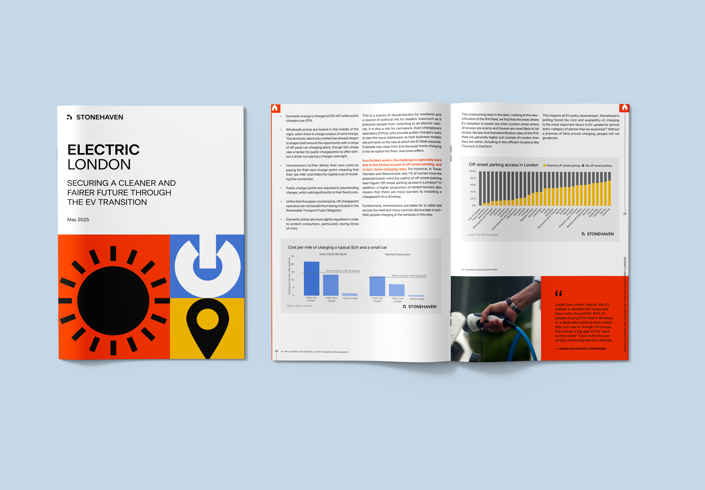
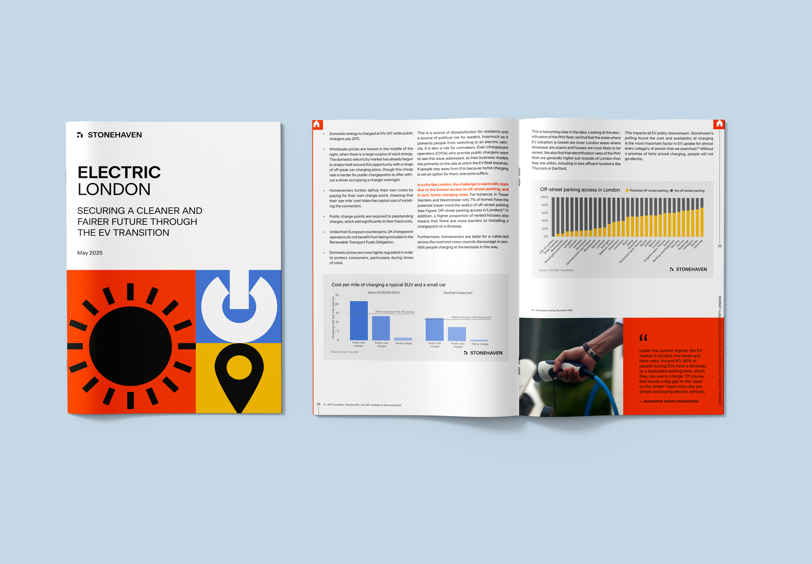

The Electric London coalition brings together businesses and organisations across the EV value chain to sustain London’s leadership in electric vehicle adoption and push for a fair, city-wide transition. My role was to support the coalition’s work by translating complex economic, transport and policy analysis into clear visual narratives to inform public debate and policy engagement.
 

Working closely with data, economics and policy teams, I shaped visuals that brought together evidence on EV uptake, charging access, affordability and air quality. The focus was on structuring disparate datasets into a coherent visual narrative that could be understood by policymakers, industry stakeholders and the general public.
The resulting visuals supported the coalition’s reporting and communications activity, helping clarify the risks of policy rollback and set out the case for extending measures such as the Cleaner Vehicle Discount and improving access to charging. The emphasis throughout was on clarity and simplicity, ensuring the data communicated its message directly without diluting the core arguments.